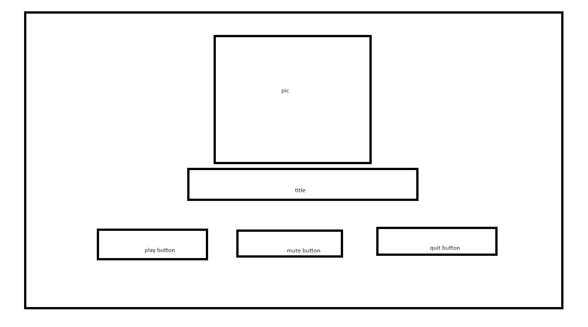
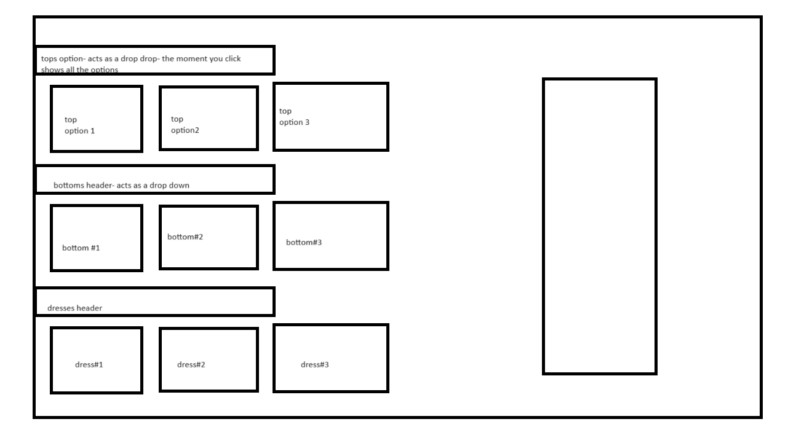
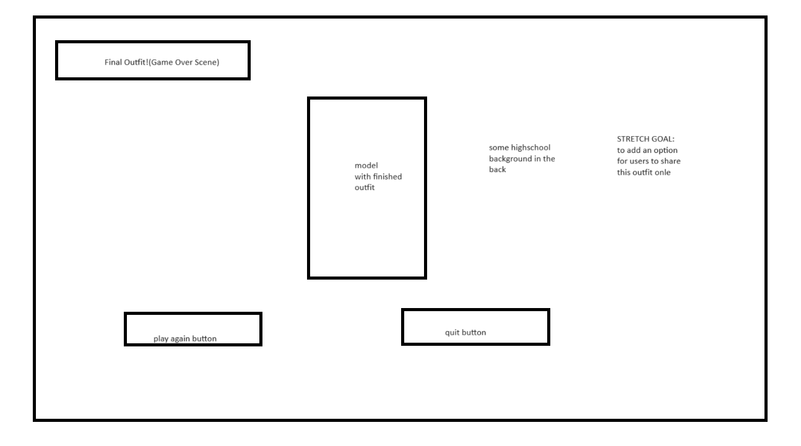

Documentation
Inspiration
Growing up, dress up games were my favorite genre of games so I had made this project as a tribute to my younger self.
Mockups
Home Page

Game Window
>

Game Over
>

Key Takeways
This was my favorite project to work for 235. It taught me how to read documentation, search answers through StackOverflow and take user feedback. I personally enjoyed working on it as PIXI is easy to grasp and implement.
Luckily most of my stretch goals that I had initially laid out, I was able to complete them.
Challenges
- Loading Textures
When I was working on making its prototype, the biggest issue I had faced was to make PIXI load textures for it.
I was not able to find why it did not work but I had later found a tutorial which helped me out solve the issue.
- Using Click On Items
In some of the dress games, I had played, the user could change outfits using clicking the buttons.
It was challenging to implemenent as often times my code would either break or two items would be shown on the mannequinn.
To fix this issue, I had used modulus instead which ensured that each time user would click it, only a new item would appear and previous one would disapper.
- Making classes
Even though, I had worked with classes using Circle Blast, it took me a while to grasp the concept. PIXI's documentation was incredibly helpful in helping me understand how to load my assets and make them objects to make my code more readable.
- Adding a Background Music
Initially, I had used PIXI.sounds to import my music however after looking it up, I found out that Howler is used instead. So, all my sounds are handled by Howler.
Feedback on Prototype
- Game window to big for the browser screen
As I had building it on Mozilla, I did not realize how big the game really looked like. This critique helped me improve my user accessibilty.
- Textures Anchor Point issue
At first, users were able to drag it from the top right corner of the image which was technically outside the image. This feedback helped me set anchor points
- Add More Clothing Options
Since, it was a demo, I had added two pairs of tops and bottoms but this helped me keep in mind for the amount of clothing I would add in future.
- Girl Aesthetic
The Prototype had used black and red as its primary colors which are not the colors you see little girls attracted to. So, I had taken Barbie as an inspiration for my aesthetic of the game and the outfits.
- Making user being able to layer in the game
After incorporating all the other reviews from my classmates and professor August Zinner, I was showing it to my friend who had suggested me to allow players to be able to layer in the game. Although, I had ran out of time to implement this feature but this is something I would work on during break.
References
Coding
- Navbar
- How to make PIXI Canvas Responsive
- Pixi Documentation
I had used it to get an idea of what interractions can I use for player interractions.
- Circle Blast code
I had used it as a guide with how music and classes can be made.
- Dragging Tutorial
This was another YouTuber that I had refered to, as I struggled with how dragging actually works in PIXI.
- Blog on how Dragging works
I had refered it to get some idea with how I could have used PIXI to make dragging work
- Textures
When I had first started my code would not be able to load textures, hence it was helpful in making them work.
Assets
Since this game required specific sizes of clothing for the mannequin, I had made the mannequin, clothes and shoes using Photoshop.
Music
For music I had relied on freesound.org
- Background Music
- Mouse CLick
Fonts used
- Lilita One
- Lucida Sans
Citations
- alib-ms. (n.d.). Lucida Sans font family. Microsoft.com. Retrieved December 16, 2023, from https://learn.microsoft.com/en-us/typography/font-list/lucida-sans
- Lilita One. (n.d.). Google Fonts. Retrieved December 16, 2023, from https://fonts.google.com/specimen/Lilita+One?query=Lilit
- Mouse-click-single-00.Flac. (n.d.). Freesound.org. Retrieved December 16, 2023, from https://freesound.org/people/pbimal/sounds/534103/
- Wav, U. T. L. (n.d.). Upbeat theme loop.Wav. Freesound.org. Retrieved December 16, 2023, from https://freesound.org/people/Mrthenoronha/sounds/506893/
- Löw, A. (2023, October 18). How to create sprite sheets & animations for PixiJS 7. Codeandweb.com. https://www.codeandweb.com/texturepacker/tutorials/how-to-create-sprite-sheets-and-animations-with-pixijs
- Stein, C. W. (n.d.). How to drag and drop. Codewithstein.com. Retrieved December 16, 2023, from https://codewithstein.com/how-to-drag-and-drop-pixijs/
-
Warden, J. [@JesseWarden]. (2017, March 15). Drag, Spin, and Drop in Pixi.js. Youtube. https://www.youtube.com/watch?v=qszOcKGS1R4
- PixiJS API Documentation. (n.d.). Pixijs.Download. Retrieved December 16, 2023, from https://pixijs.download/dev/docs/index.html
- Dynamically resize the pixi stage and it’s contents on window resize and window load. (n.d.). Stack Overflow. Retrieved December 16, 2023, from https://stackoverflow.com/questions/30554533/dynamically-resize-the-pixi-stage-and-its-contents-on-window-resize-and-window
-
A better way to space out navigation bar items. (n.d.). Stack Overflow. Retrieved December 16, 2023, from https://stackoverflow.com/questions/42880090/a-better-way-to-space-out-navigation-bar-items